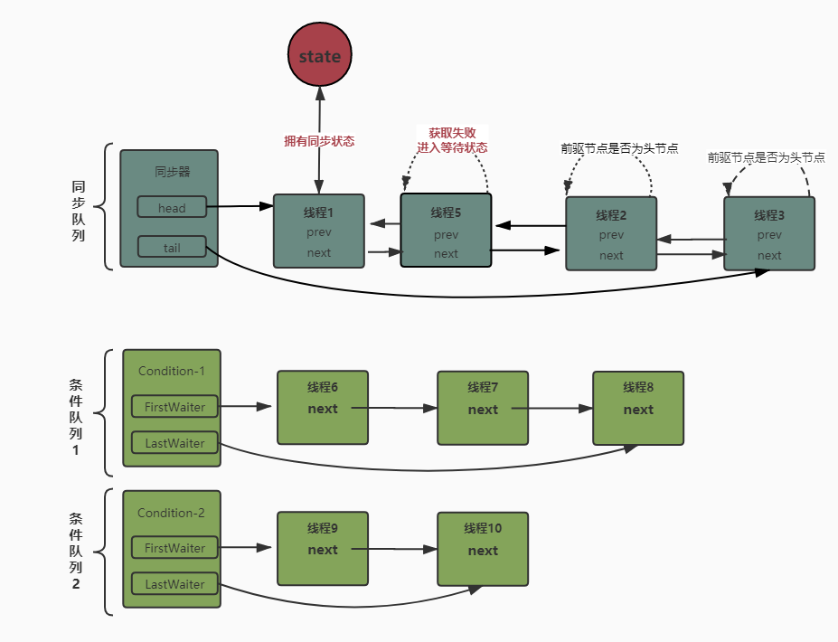
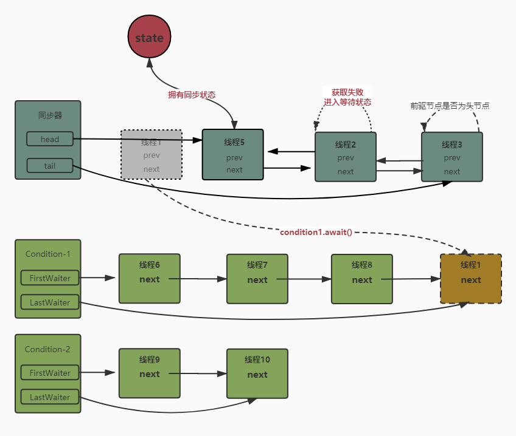
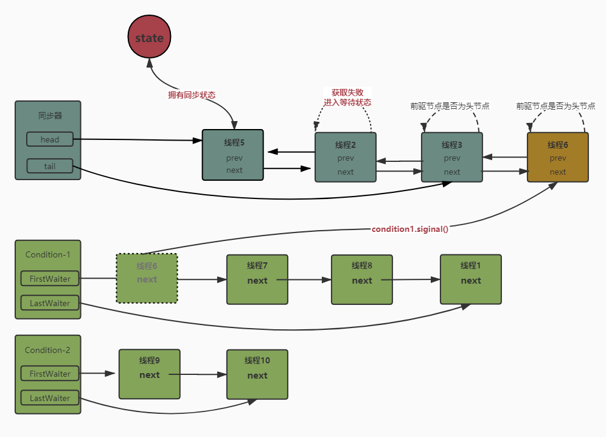

条件队列是什么？可能很多人和我一样答不出来，不过今天终于搞清楚了！
条件队列：当某个线程调用了wait方法，或者通过Condition对象调用了await相关方法，线程就会进入阻塞状态，并加入到对应条件队列中。
在等待唤醒机制相关文章中我们提到了条件队列，即当对象获取到同步锁之后，如果调用了wait方法，当前线程会进入到条件队列中，并释放锁。
synchronized(对象){ // 获取锁失败，线程会加入到同步队列中
while(条件不满足){
对象.wait();// 调用wait方法当前线程加入到条件队列中
}
}基于synchcronized的内置条件队列存在一些缺陷。每个内置锁都只能有一个相关联的条件队列，因而存在多个线程可能在同一个条件队列上等待不同的条件谓词，并且在最常见的加锁模式下公开条件队列对象。
Java中的锁的实现可以分为两种，一种是基于synchronized的隐式锁，它是基于JVM层面实现的；而另一种则是基于AQS框架在代码层面实现的锁，如ReentrantLock等，在进行并发控制过程中，很多情况下他们都可以相互替代。
其中同步队列和条件队列是AQS中两个比较核心的概念，它们是代码层面实现锁的关键。关于同步队列的内容，我们已经在图解AQS的设计与实现，手摸手带你实现一把互斥锁！中进行了详细的介绍。
与Object配合synchronized相比，基于AQS的Lock&Condition实现的等待唤醒模式更加灵活，支持多个条件队列，支持等待状态中不响应中断以及超时等待功能； 其次就是基于AQS实现的条件队列是"肉眼可见"的，我们可以通过源代码进行debug，而synchronized则是完全隐式的。
与条件队列密不可分的类则是ConditionObject， 是AQS中实现了Condition接口的内部类，通常配合基于AQS实现的锁一同使用。当线程获取到锁之后，可以调用await方法进入条件队列并释放锁，或者调用singinal方法唤醒对应条件队列中等待时间最久的线程并加入到等待队列中。
在AQS中，线程会被封装成Node对象加入队列中，而条件队列中则复用了同步队列中的Node对象。

Condition接口一共定义了以下几个方法：
await(): 当前线程进入等待状态，直到被通知(siginal)或中断【和wait方法语义相同】。
awaitUninterruptibly(): 当前线程进入等待状态，直到被通知，对中断不敏感。
awaitNanos(long timeout): 当前线程进入等待状态直到被通知(siginal)，中断或超时。
awaitUnitil(Date deadTime): 当前线程进入等待状态直到被通知(siginal)，中断或到达某个时间。
signal(): 唤醒一个等待在Condition上的线程，该线程从等待方法返回前必须获得与Condition关联的锁【和notify方法语义相同】
signalAll(): 唤醒所有等待在Condition上的线程，能够从等待方法返回的线程必须获得与Condition关联的锁【和notifyAll方法语义相同】。
当线程获取到锁之后，Condition对象调用await相关的方法，线程会进入到对应的条件队列中。
/**
* 如果当前线程被终端，抛出 InterruptedException 异常
*/
public final void await() throws InterruptedException {
if (Thread.interrupted())
throw new InterruptedException();
// 添加当前线程到【条件队列】
Node node = addConditionWaiter();
// 释放已经获取的锁资源，并返回释放前的同步状态
int savedState = fullyRelease(node);
int interruptMode = 0;
// 如果当前节点不在【同步队列】中， 线程进入阻塞状态，等待被唤醒
while (!isOnSyncQueue(node)) {
LockSupport.park(this);
if ((interruptMode = checkInterruptWhileWaiting(node)) != 0)
break;
}
if (acquireQueued(node, savedState) && interruptMode != THROW_IE)
interruptMode = REINTERRUPT;
if (node.nextWaiter != null) // clean up if cancelled
unlinkCancelledWaiters();
if (interruptMode != 0)
reportInterruptAfterWait(interruptMode);
}
Condition对象调用signal或者signalAll方法时，
/**
* 将【条件队列】中第一个有效的元素移除并且添加到【同步队列】中
* 所谓有效指的是非null，并且状态吗
* @param first 条件队列中第一个非空的元素
*/
private void doSignal(Node first) {
do {
if ( (firstWaiter = first.nextWaiter) == null)
lastWaiter = null;
first.nextWaiter = null;
// 将条件队列中等待最久的那个有效元素添加到同步队列中
} while (!transferForSignal(first) &&
(first = firstWaiter) != null);
}
/**
* 将条件队列中的节点转换到同步队列中
*/
final boolean transferForSignal(Node node) {
/*
* If cannot change waitStatus, the node has been cancelled.
* 如果节点的等待状态不能被修改，说明当前线程已经被取消等待【多个线程执行siginal时会出现的情况】
*/
if (!compareAndSetWaitStatus(node, Node.CONDITION, 0))
return false;
/*
* 加入到【同步队列】中，并且尝试将前驱节点设置为可唤醒状态
*/
Node p = enq(node); // 将node添加到同步队列中，并返回它的前驱节点
int ws = p.waitStatus;
// 如果前驱节点不需要唤醒，或者设置状态为‘唤醒’失败，则唤醒线程时期重新争夺同步状态
if (ws > 0 || !compareAndSetWaitStatus(p, ws, Node.SIGNAL))
LockSupport.unpark(node.thread);
return true;
}
/**
* 自定义互斥锁
*
* @author cruder
* @time 2019/11/29 9:43
*/
public class MutexLock {
private static final Sync STATE_HOLDER = new Sync();
/**
* 通过Sync内部类来持有同步状态， 当状态为1表示锁被持有，0表示锁处于空闲状态
*/
private static class Sync extends AbstractQueuedSynchronizer {
/**
* 是否被独占， 有两种表示方式
* 1. 可以根据状态，state=1表示锁被占用，0表示空闲
* 2. 可以根据当前独占锁的线程来判断，即getExclusiveOwnerThread()!=null 表示被独占
*/
@Override
protected boolean isHeldExclusively() {
return getExclusiveOwnerThread() != null;
}
/**
* 尝试获取锁，将状态从0修改为1，操作成功则将当前线程设置为当前独占锁的线程
*/
@Override
protected boolean tryAcquire(int arg) {
if (compareAndSetState(0, 1)) {
setExclusiveOwnerThread(Thread.currentThread());
return true;
}
return false;
}
/**
* 释放锁，将状态修改为0
*/
@Override
protected boolean tryRelease(int arg) {
if (getState() == 0) {
throw new UnsupportedOperationException();
}
setExclusiveOwnerThread(null);
setState(0);
return true;
}
//【新增代码】
final ConditionObject newCondition() {
return new ConditionObject();
}
}
/**
* 下面的实现Lock接口需要重写的方法，基本是就是调用内部内Sync的方法
*/
public void lock() {
STATE_HOLDER.acquire(1);
}
public void unlock() {
STATE_HOLDER.release(1);
}
// 【新增代码】 获取条件队列
public Condition newCondition(){
return STATE_HOLDER.newCondition();
}
}
/**
* 有界阻塞阻塞队列
*
* @author Jann Lee
* @date 2019-12-11 22:20
**/
public class BoundedBlockingQueue<T> {
/**
* list作为底层存储结构
*/
private List<T> dataList;
/**
* 队列的大小
*/
private int size;
/**
* 锁，和条件变量
*/
private MutexLock lock;
/**
* 队列非空 条件变量
*/
private Condition notEmpty;
/**
* 队列未满 条件变量
*/
private Condition notFull;
public BoundedBlockingQueue(int size) {
dataList = new ArrayList<>();
lock = new MutexLock();
notEmpty = lock.newCondition();
notFull = lock.newCondition();
this.size = size;
}
/**
* 队列中添加元素 [只有队列未满时才可以添加，否则需要等待队列变成未满状态]
*/
public void add(T data) throws InterruptedException {
lock.lock();
try {
// 如果队列已经满了， 需要在等待“队列未满”条件满足
while (dataList.size() == size) {
notFull.await();
}
dataList.add(data);
Thread.sleep(2000);
notEmpty.signal();
} finally {
lock.unlock();
}
}
/**
* 移除队列的第一个元素[只有队列非空才可以移除，否则需要等待变成队列非空状态]
*/
public T remove() throws InterruptedException {
lock.lock();
try {
// 如果为空， 需要在等待“队列非空”条件满足
while (dataList.isEmpty()) {
notEmpty.await();
}
T result = dataList.remove(0);
notFull.signal();
return result;
} finally {
lock.unlock();
}
}
}最后敬上一个关注了也没有错的公众号~